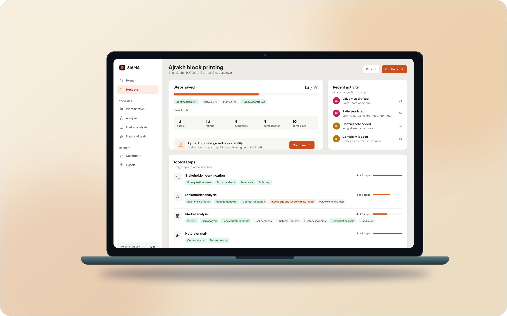
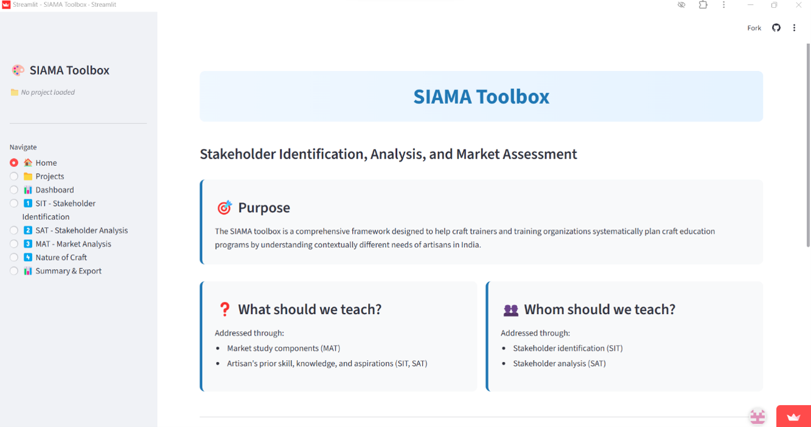
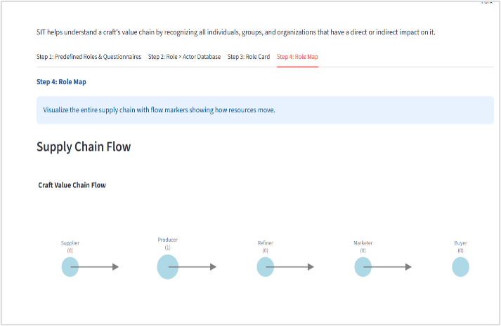
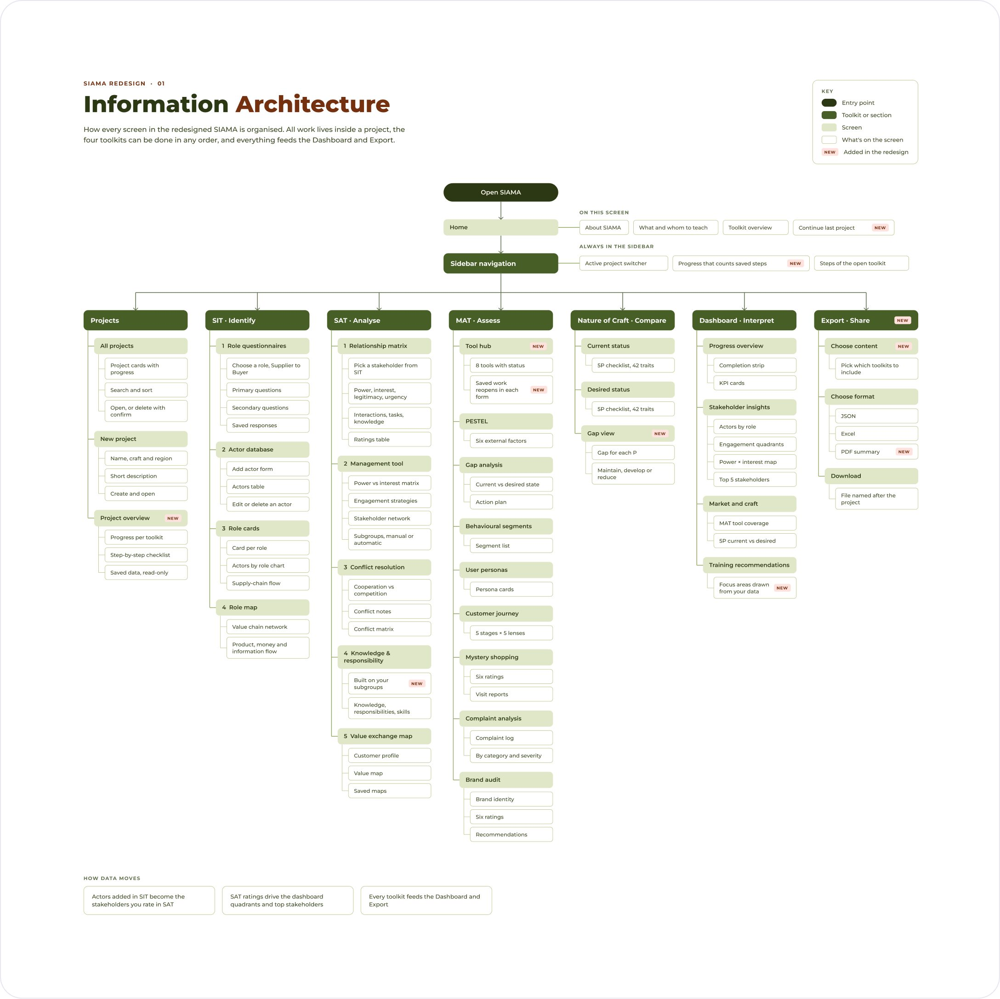
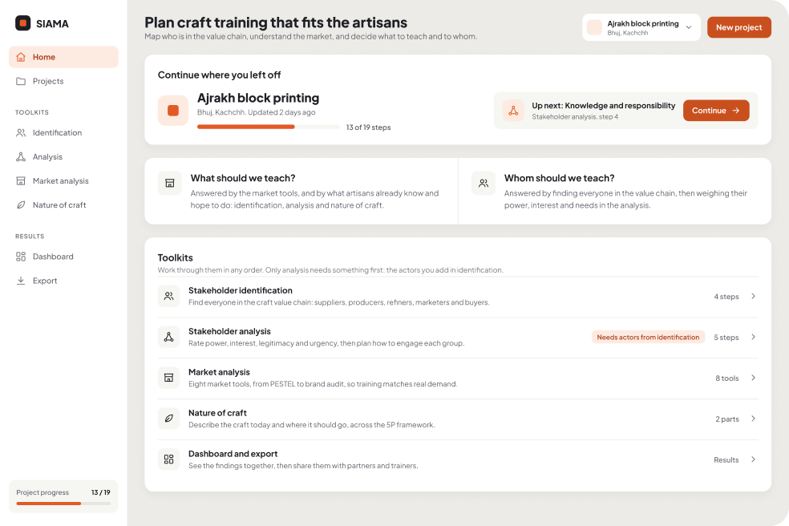
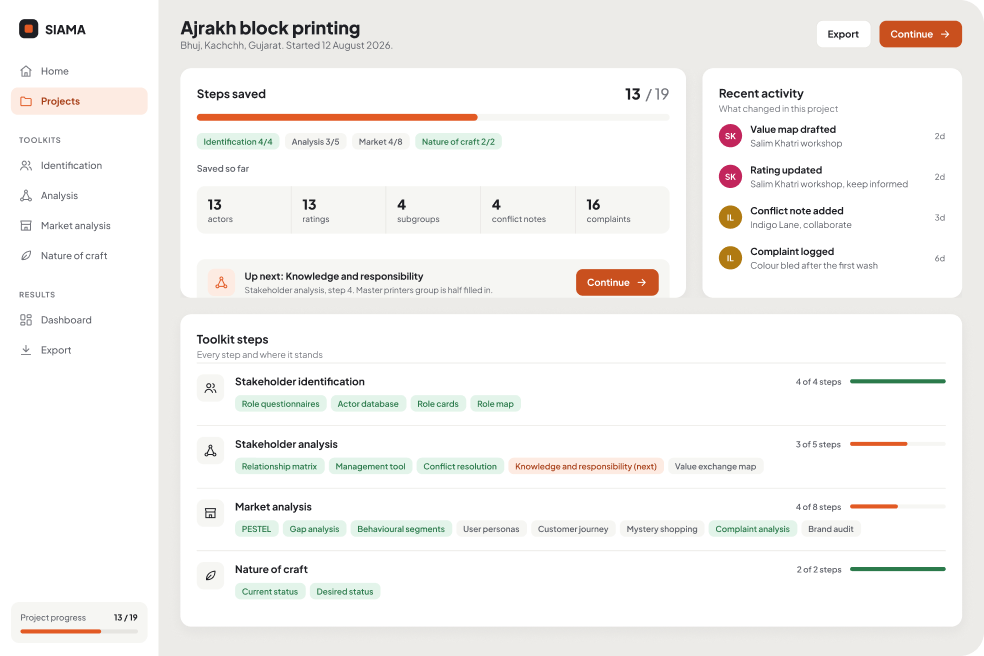
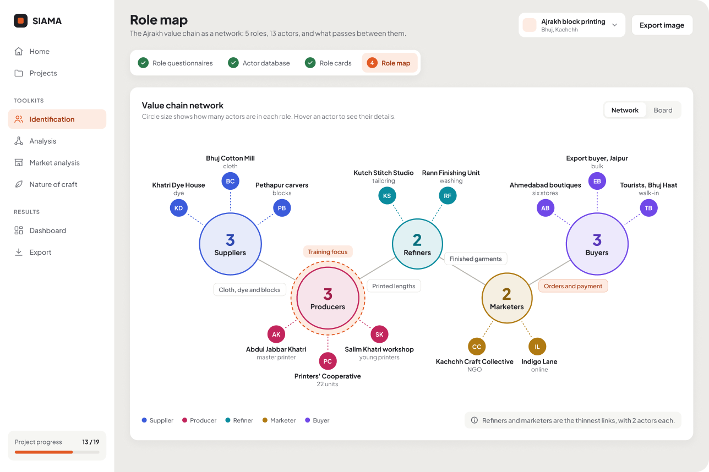
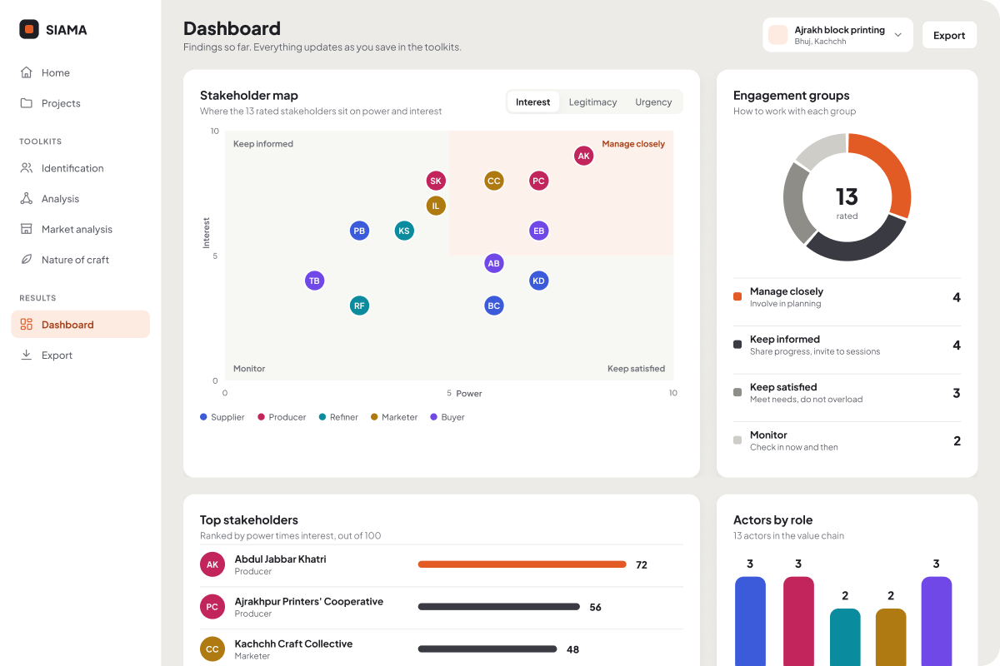
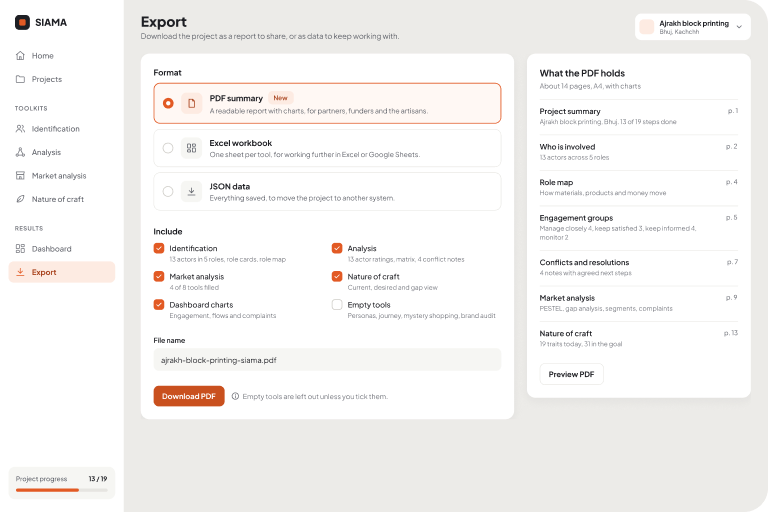

SIAMA · Craft education planning
SIAMA, a guided planning workspace for craft training programmes
UX DESIGN + DATA VISUALISATION
SEMESTER THESIS PROJECT
STREAMLIT + SUPABASE
6 MONTHS
View full case study on Behance

Go back
01
OVERVIEW
02
CONTEXT
03
PROBLEM
04
KEY DECISIONS
05
FINAL DESIGN
Information architecture
Project selection and progress
SIT Role Map
Dashboard and export
06
OUTCOME
01 / 06
OVERVIEW
About SIAMA
SIAMA (Stakeholder Identification, Analysis and Market Assessment) is a planning toolbox for craft trainers. It supports programme planning through stakeholder identification (SIT), stakeholder analysis (SAT), market analysis (MAT) and a Nature of Craft module using the 5P framework.
Overview
This project enhances the existing Python and Streamlit application. It does not redesign the underlying SIAMA methodology or replace its toolkit content.
My role
Individual project, with research guidance from Dr. Sharmistha Banerjee. I audited the existing code and built a database layer, guided navigation with progress tracking, and a dashboard with data export.
Scope
Code audit
Database design
Supabase
Progress navigation
Data visualisation
Dashboard and export
UI redesign
Outcomes
18
Database tables across project, SIT, SAT, MAT and Nature of Craft
40+
Save, load and delete functions in one database module
19
Toolkit steps with progress tracking
02 / 06
CONTEXT
I audited the existing application and enhanced its data, navigation and analysis layers while preserving the original SIAMA framework.
I worked from the existing Python and Streamlit codebase. With no complete product specification, I read the code line by line and mapped the pages, saved values and data flow.
SIT
Stakeholder identification
Identify people, groups and organisations connected to the craft value chain.
SAT
Stakeholder analysis
Analyse stakeholders through power, interest, legitimacy and urgency, and map relationships, conflicts and knowledge exchanges.
MAT
Market analysis
Use eight market-analysis tools, including PESTEL, gap analysis, personas and customer journeys.
5P
Nature of craft
Record the current and desired state of the craft across the 5P framework.
System overview
Trainer
Creates or reopens a project
Four toolkits
SIT, SAT, MAT and Nature of Craft
Saved project
Every answer linked to one project
Dashboard and export
Charts to review, JSON and Excel to share
03 / 06
PROBLEM
The original SIAMA application collected information, but did not reliably help trainers retain, navigate or interpret it.
The original application stored entered information in Streamlit session state rather than a persistent database. The interface presented toolkit steps as a flat list, and the output was a raw Excel export.
Before: the original application

Original home page

Summary and Excel export

Original role map
Design implication
SIAMA needed to behave less like a temporary data-entry form and more like a continuing planning workspace that saves work, makes progress visible and lets trainers review what they have collected.
Four experience gaps
Session state
Refresh
Gap 1
Work was not persistent
Responses lived in temporary session state and could be lost when the tab closed or refreshed.
SIT
SAT
MAT
Gap 2
No progress or guided flow
Trainers could not easily see where they were, what was complete or what remained.
Edit
Delete
Gap 3
Entries were difficult to correct
There was no straightforward edit or delete path for saved entries.
export.xlsx
Gap 4
No synthesis of findings
The output was a raw spreadsheet, with no dashboard bringing the analysis together.
04 / 06
KEY DECISIONS
I focused the redesign on three changes: keep work available, make the workflow legible and turn collected information into something trainers can review.
I had to improve the experience within the existing SIAMA methodology and Streamlit codebase, rather than rebuild the product from scratch.
Decision 1
Make projects persistent
Supabase/PostgreSQL with 18 tables across project core, SIT, SAT, MAT and Nature of Craft. A database.py module holds more than 40 save, load and delete functions.
Records link back to a project, which supports project-level retrieval and cascade deletion.
Decision 2
Make progress visible in the workflow
An active-project selector, overall progress, section progress for each toolkit and step-level completion markers.
Progress is calculated in Python from loaded session data, avoiding extra database calls.
Decision 3
Show relationships and synthesise findings
The SIT Role Map changed from a role-count bar chart to a network of individual actors and value-chain flows. The dashboard and export became one end-of-workflow view.
A count alone does not show how actors relate.
The enhanced architecture
Streamlit frontend
Toolkits, progress and dashboard
database.py
Every save, load and delete in one module
Supabase / PostgreSQL
18 tables, one project at the root
Rather than changing the SIAMA framework or moving to a separate frontend, I focused on making the existing tool dependable and easier to navigate.
05 / 06
FINAL DESIGN
Final screens in task order
Screens shown with one sample project: Ajrakh block printing in Bhuj, with 13 actors and 13 of 19 steps done.
01
Persistent database layer
02
Guided navigation with progress tracking
03
Visual dashboard with data export
Information architecture
The project sits at the root, with four toolkits under it and the dashboard and export at the end.

Project selection and progress

Home

Project overview
SIT Role Map
Before: original role map

After: actor network
Dashboard and export

Dashboard

Export
06 / 06
OUTCOME
The enhanced SIAMA application connects persistent project data, guided progress and visual analysis in a deployed Streamlit experience.
The dashboard brings together KPI cards, power and interest charts, engagement quadrants, MAT coverage and 5P summaries, with JSON and Excel export.
Database records
Data entered through the app appeared in the matching Supabase tables.
Project deletion
Deleting a project removed its records from 17 dependent tables.
Across devices
A project saved on one device loaded on another.
Test projects
Three test projects checked switching, progress, the role map and the dashboard.
What this does not claim
The work shows implemented functionality and technical validation. It does not show measured improvements in craft-training outcomes or results from a formal usability study.
What I’d do differently
Trainer sessions
Run task-based sessions with craft trainers on real planning scenarios.
Dashboard meaning
Test whether the dashboard communicates what the collected data means, not just whether charts render.
Editing and recovery
Evaluate editing, correction and returning to saved or incomplete projects.
Collecting structured information is only one part of the experience. The system also needs to preserve the work, show people where they are and make the information useful for the next decision.
THAT WAS THE SHORT VERSION
The full case study has the research, all four versions, the information architecture and every one of the 27 screens.
View full case study on Behance
Next project
TrackIt
04
One place for the whole household’s money